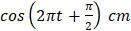
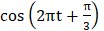
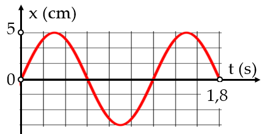
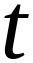
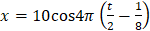
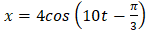
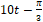
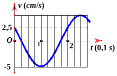
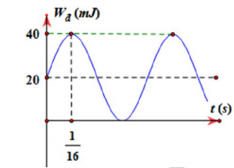

. Pha dao động của chất điểm khi t = 1 s là:
cm, t tính bằng giây. Thời gian vật thực hiện được một dao động toàn phần là:
Li độ của một vật dao động điều hòa phụ thuộc vào thời gian
được biểu diễn bởi đồ thị như hình bên. Chu kì dao động của vật là
(x tính bằng cm, t tính bằng giây).
, trong đó x tính bằng xentimet (cm) và t tính bằng giây (s). Lấy $\pi^{2}=10$, gốc thế năng tại vị trí cân bằng.
rad.
Hình bên là đồ thị biểu diễn sự phụ thuộc của vận tốc v theo thời gian t của một vật dao động điều hòa. Vận tốc cực đại của vật là bao nhiêu cm/s (làm tròn kết quả đến chữ số hàng đơn vị)?
Nhập thông tin để hệ thống ghi nhận kết quả.
Bạn có thêm 5 phút để hoàn tất. Hết 5 phút bài sẽ tự động nộp.
Hành vi này đã được ghi nhận. Hãy quay lại chế độ toàn màn hình để tiếp tục làm bài.